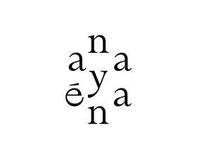
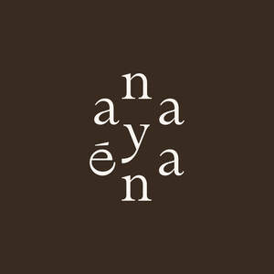

Trade Mark Journal No.2025/041 10 October 2025
UK00004272030 30 September 2025 (3,5,44)
Mark 1

Mark 2

- Class 3
- Cosmetics; Skincare cosmetics; Moisturisers [cosmetics]; Cosmetics and cosmetic preparations; Hair cosmetics; Skin fresheners [cosmetics]; Cosmetics for eye-lashes; Cosmetics for suntanning; Anti-aging moisturizers used as cosmetics; Organic cosmetics; Nail cosmetics; Non-medicated cosmetics; Skin moisturizers used as cosmetics; Lip cosmetics; Natural cosmetics; Mousses [cosmetics]; Cosmetics preparations; Make-up palettes containing cosmetics; Tanning gels [cosmetics]; Cosmetics in the form of lotions; Tanning oils [cosmetics]; Colour cosmetics; Beauty care cosmetics; Facial creams [cosmetics]; Self-tanning preparations [cosmetics]; Suncare lotions [for cosmetic use]; Cosmetics for animals; Tanning preparations [cosmetics]; Decorative cosmetics; Eyebrow cosmetics; Multifunctional cosmetics; Eye cosmetics; Milks [cosmetics]; Body creams [cosmetics]; After-sun oils [cosmetics]; Skin masks [cosmetics]; Cosmetics for eye-brows; Tanning milks [cosmetics]; Functional cosmetics; Facial gels [cosmetics]; Suntan oils [cosmetics]; Skin care cosmetics; Suntan lotion [cosmetics]; Cosmetics for children; Fluid creams [cosmetics]; Non-medicated cosmetics and toiletry preparations; Humectant preparations [cosmetics]; Emollient preparations [cosmetics]; Cosmetics in the form of creams; Powder compacts [cosmetics]; Sun-tanning preparations [cosmetics]; Cosmetic hair lotions; Suntanning oil [cosmetics]; After-sun milk [cosmetics]; Colour cosmetics for the skin; After-sun milks [cosmetics]; Cosmetics for use on the skin; Cosmetic moisturisers; Sunscreens [for cosmetic use]; Cosmetic creams and lotions; Bath powder [cosmetics]; Night creams [cosmetics]; Skin recovery creams [cosmetics]; Sun blocking lipsticks [cosmetics]; Body gels [cosmetics]; Cosmetics for the use on the hair; Cosmetic products in the form of aerosols for skincare; Body and facial creams [cosmetics]; Lip stains [cosmetics]; Sunscreen [for cosmetic use]; Sunscreen creams [for cosmetic use]; Creams (Cosmetic -); Cosmetic creams; Body care cosmetics; Cosmetic soaps; Cosmetics containing keratin; Cosmetics in the form of powders; Cosmetic skin fresheners; Hair care lotions [for cosmetic use]; Dyes (Cosmetic -); Cosmetic dyes; Cosmetics containing panthenol; After-sun lotions [for cosmetic use]; Cosmetics in the form of oils; Beauty lotions; Nail paint [cosmetics]; Cosmetic facial lotions; Facial lotions [cosmetic]; Cosmetic suntan lotions; Perfume oils for the manufacture of cosmetic preparations; Colour cosmetics for children; Skin care lotions [cosmetic]; Nail hardeners [cosmetics]; Tissues impregnated with cosmetics; Anti-aging creams [for cosmetic use]; Nail tips [cosmetics]; Nail primer [cosmetics]; Sun protecting creams [cosmetics]; Cosmetic products for the shower; Smoothing emulsions [cosmetics]; Anti-ageing creams [for cosmetic use]; Perfumed powders [for cosmetic use]; Skin cleansers [cosmetic]; Liners [cosmetics] for the eyes; Moisturising skin lotions [cosmetic]; Skin creams [cosmetic]; Cosmetic creams for the skin; Body and facial gels [cosmetics]; Skin creams [for cosmetic use]; Nutritional creams (Non-medicated -).
- Class 5
- Nutritional supplements; Dietary and nutritional supplements; Nutraceuticals for use as a dietary supplement; Mineral nutritional supplements; Liquid nutritional supplements; Nutritional supplement energy bars; Dietary supplements; Nutritional supplements for veterinary use; Dietary supplement drinks; Dietary food supplements; Protein dietary supplements; Yeast dietary supplements; Nutritional supplements for livestock feed; Nutritional supplement meal replacement bars for boosting energy; Flaxseed dietary supplements; Mineral dietary supplements; Enzyme dietary supplements; Powdered nutritional supplement drink mix; Dietary supplements consisting of vitamins; Lecithin dietary supplements; Dietary supplement drink mixes; Wheat dietary supplements; Nutritional supplements consisting primarily of calcium; Dietary supplements for medical use; Liquid dietary supplements; Chlorella dietary supplements; Zinc dietary supplements; Glucose dietary supplements; Dietary and nutritional preparations; Nutritional supplements consisting primarily of magnesium; Propolis dietary supplements; Dietary supplements and dietetic preparations; Powdered nutritional supplement energy drink mix; Whey protein dietary supplements; Anti-oxidant food supplements; Casein dietary supplements; Food supplements for dietetic use; Ground flaxseed fiber for use as a dietary supplement; Alginate dietary supplements; Pollen dietary supplements; Nutritional supplements consisting primarily of zinc; Nutritional supplements consisting of fungal extracts; Dietary supplements for infants; Food supplements; Albumin dietary supplements; Linseed dietary supplements; Dietary food supplements used for modified fasting; Vitamin supplements; Protein powder dietary supplements; Probiotic supplements; Soy protein dietary supplements; Dietary supplements for pets; Protein supplements; Dietary supplements for animals; Brewer's yeast dietary supplements; Nutritional supplements made of starch adapted for medical use; Calcium tablets as a food supplement; Flaxseed oil dietary supplements; Acai powder dietary supplements; Herbal dietary supplements for persons special dietary requirements; Vitamin and mineral food supplements; Nutritional supplements consisting primarily of iron; Dietary supplements for humans; Dietary supplements in powder form; Mineral dietary supplements for animals; Prebiotic supplements; Mineral dietary supplements for humans; Dietary supplemental drinks; Dietary supplements promoting fitness and endurance; Anti-oxidant supplements; Health food supplements for persons with special dietary requirements; Protein supplement shakes; Soy isoflavone dietary supplements; Dietary supplements with a cosmetic effect; Colostrum supplements; Dietary supplements consisting primarily of calcium; Energy gels (dietary supplements); Food supplements for medical purposes; Health food supplements made principally of vitamins; Calcium supplements; Dietary supplements for controlling cholesterol; Dietary supplements and dietetic preparations containing CBD oil; Dietetic and nutritional preparations; Dietary supplements consisting primarily of magnesium; Bee pollen for use as a dietary food supplement; Vitamin and mineral supplements; Folic acid dietary supplements; Vitamin supplement patches; Vitamin preparations in the nature of food supplements; Food supplements for veterinary use; Powdered fruit-flavored dietary supplement drink mix; Homeopathic supplements; Liquid vitamin supplements; Herbal supplements; Vitamin and mineral supplements for pets; Wheat germ dietary supplements; Dietary supplements for humans not for medical purposes; Nutritional drink mix for use as a meal replacement; Food supplements for non-medical purposes; Linseed oil dietary supplements; Vitamin supplements for animals; Dietary supplements for pets in the nature of a powdered drink mix; Health food supplements made principally of minerals; Mineral supplements for feeding livestock; Dietary supplements consisting primarily of iron; Feed supplements for veterinary use; Anti-oxidants for dietary use; Medicated food supplements; Food supplements for sportsmen; Dietetic foods for use in clinical nutrition; Food supplements in liquid form; Fodder supplements for veterinary purposes; Health-aid foods supplements containing ginseng; Protein supplements for animals; Activated charcoal dietary supplements; Dietary fiber to aid digestion; Zinc supplement lozenges; Natural dietary supplements for treating claustrophobia; Liquid herbal supplements; Health-aid foods supplement containing red ginseng; Dietary pet supplements in the form of pet treats; Nutritional additives to foodstuffs for animals, for medical purposes; Royal jelly dietary supplements; Pine pollen dietary supplements; Ganoderma lucidum spore powder dietary supplements; Dietary supplements for human beings; Fitness and endurance supplements.
- Class 44
- Food nutrition consultation; Nutrition counseling; Nutrition counselling; Nutrition and dietetic consultancy; Nutrition consultancy; Providing information about dietary supplements and nutrition; Counselling relating to nutrition; Advice relating to nutrition; Dietary and nutritional advice; Nutritional advice; Dietary and nutritional guidance; Consultancy relating to nutrition; Consultancy in the field of nutrition; Guidance on nutrition; Nutritional guidance; Information relating to nutrition; Providing information relating to dietary and nutritional supplements; Providing nutritional information about food; Providing nutritional information about food for medical weight loss purposes; Professional consultancy relating to nutrition; Consultancy services in the field of nutrition; Advisory services relating to nutrition; Consultancy services related to nutrition; Consultancy services relating to nutrition; Provision of information relating to nutrition; Providing information relating to dietary and nutritional guidance; Providing nutritional information about drinks for medical weight loss purposes; Health counseling; Nutritional advisory services; Health care relating to naturopathy; Health care relating to fasting; Health care relating to remedial exercise; Health care relating to hydrotherapy; Health counselling; Health care relating to acupuncture; Health care relating to osteopathy; Weight reduction diet planning services; Counselling relating to diet; Health consultancy.
Aliki Zachariadis